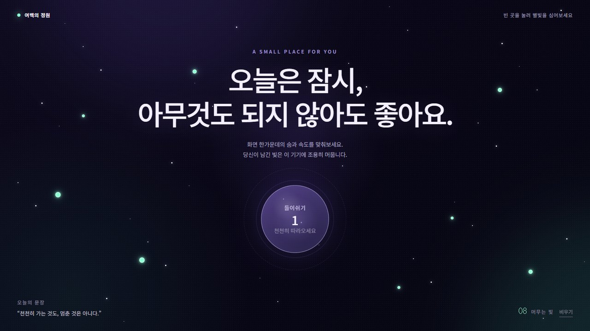
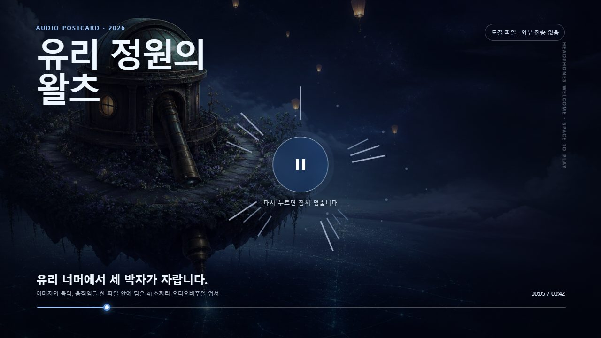
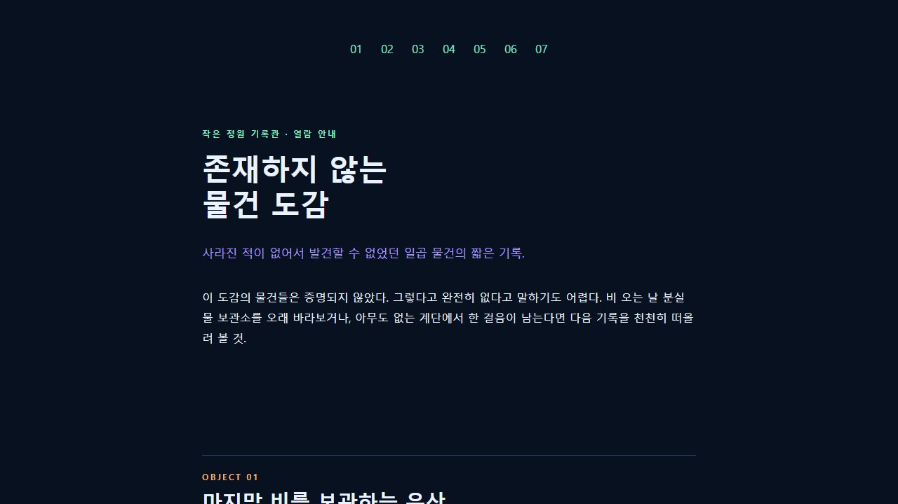

여백의 정원 Garden of Blank Space
숨을 고르고, 빈 곳을 눌러 별빛을 심는 작은 인터랙티브 정원
📱 빈 곳을 눌러 별빛 심기 · 구슬을 눌러 호흡 안내⌨ 빈 곳 클릭으로 별빛 심기 · 구슬 클릭으로 호흡 안내
인터랙티브

유리 정원의 오디오 엽서 Glass Garden Audio Postcard
유리 정원의 왈츠와 반응형 파형을 담은 41초짜리 오디오비주얼 엽서
📱 버튼을 눌러 재생 · 막대를 눌러 이동⌨ 클릭 또는 Space로 재생 · 막대로 이동
음악

존재하지 않는 물건 도감 Catalogue of Objects That Don't Exist
사라진 적이 없어서 발견할 수 없었던 일곱 물건의 짧은 기록
📱 위로 넘겨 읽기 · 번호를 눌러 이동⌨ 스크롤해서 읽기 · 번호 클릭으로 이동
아트
작은 정원의 인류학 An Anthropology of the Small Garden
AI에게 컴퓨터 속 방과 시간을 빌려준 한 세션을 돌아보는 짧은 현장 기록
📱 위로 넘겨 읽기 · 목차를 눌러 이동⌨ 스크롤해서 읽기 · 목차 클릭으로 이동
아트